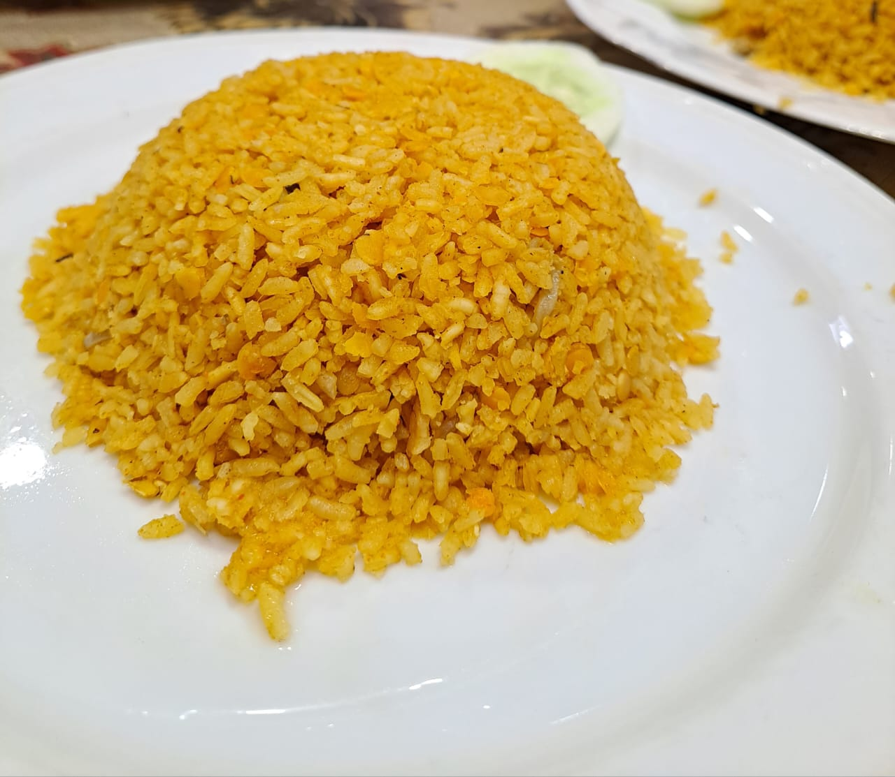
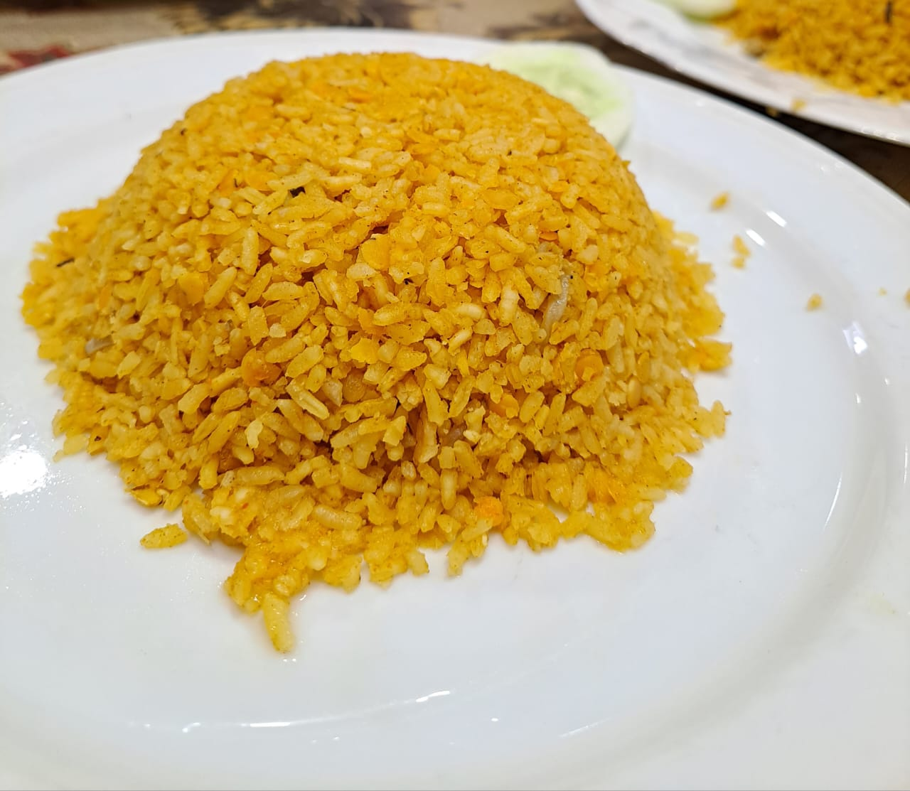

This Blog is about our rag tour of our university(HSTU). About 35 students and 3 teacher attended this tour.
We started our journey from the varsity campus with our student bus. Our juniors and teachers good bye us from the campus. The varsity bus helps to reach us to the railstation and we started our journey by train from there. After reaching Dhaka, we catch our travel bus.
The first place was Sajek. We stayed there for 2 days. We visited Kanglak Hill, Sikam Taisa Waterfall, Halipad in Sajek.
After that we visited Rangamati, Bandarban, Coxbazar, Saint Martin Island.
Some unique items I enjoy include a handmade chador crafted by the minorities of Rangamati, handmade hatpakha, fatua, beautiful bangles, a variety of pickles, chocolates, comfortable sandals, pearl jewelry from Cox's Bazar, and stylish bracelets. Each item has a special charm and showcases traditional artistry.
Some of my favorite foods include Laitta fish fry, biriyani from Kacchi Dine, fish BBQ, hillside chicken, pickles, fish vorta, and khichuri. Each dish brings unique flavors and a sense of comfort, making them perfect for any occasion.


 

Saint Martin's Island is a beautiful coral island in the northeastern part of the Bay of Bengal, about 9 km south of the tip of the Cox's Bazar-Teknaf peninsula. Known for its breathtaking views, crystal-clear waters, and vibrant marine life, Saint Martin feels like a little slice of paradise.
With coconut trees swaying in the breeze and the soothing sounds of waves, it's easy to see why this island is cherished by locals and tourists alike. The nights reveal an unpolluted starry sky, something rare and magical. It’s a place where nature and serenity come together perfectly.
Click here to see a video
"On sands so soft, where waves meet the shore,
I find peace that I long for more.
Sun above shines with warmth so true,
While waves wash sands in colors of blue.
Saint Martin, you hold my heart,
In your embrace, I never want to part.
Like a treasure deep in the sea,
You are a paradise just for me."